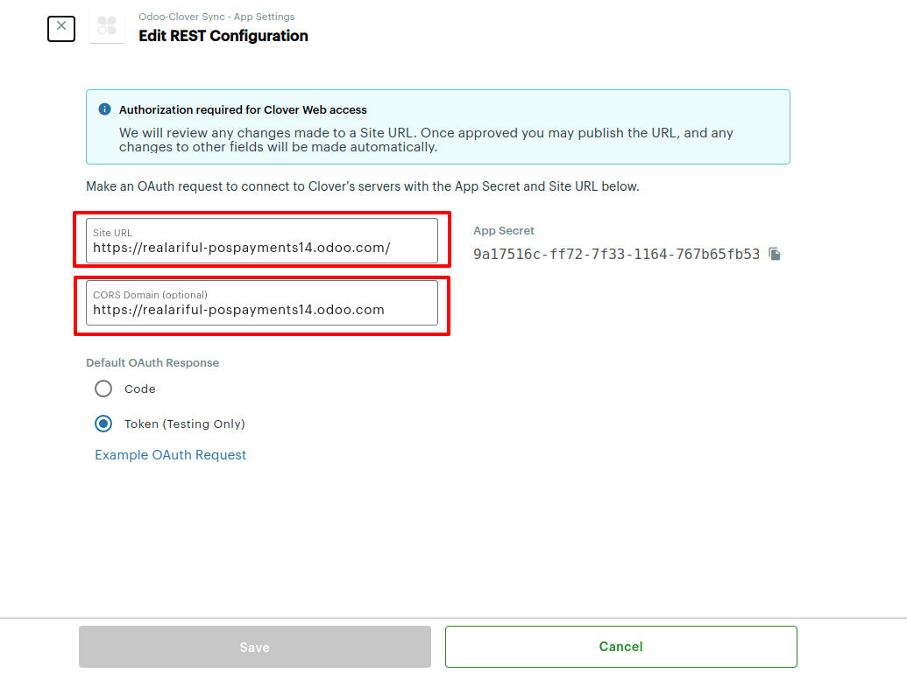
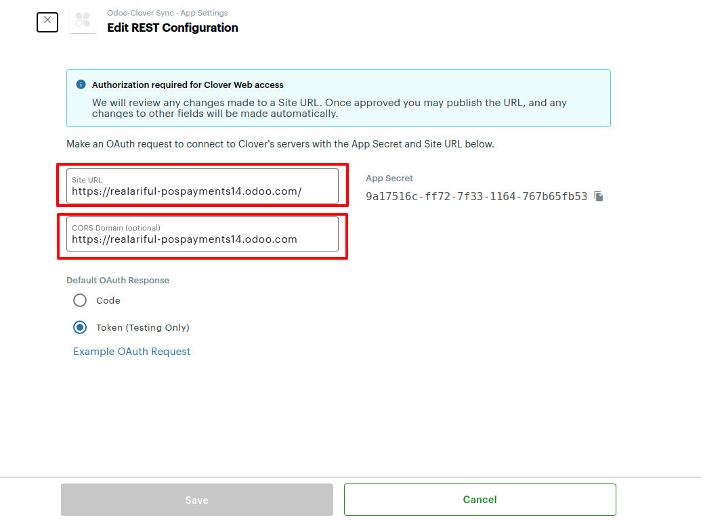
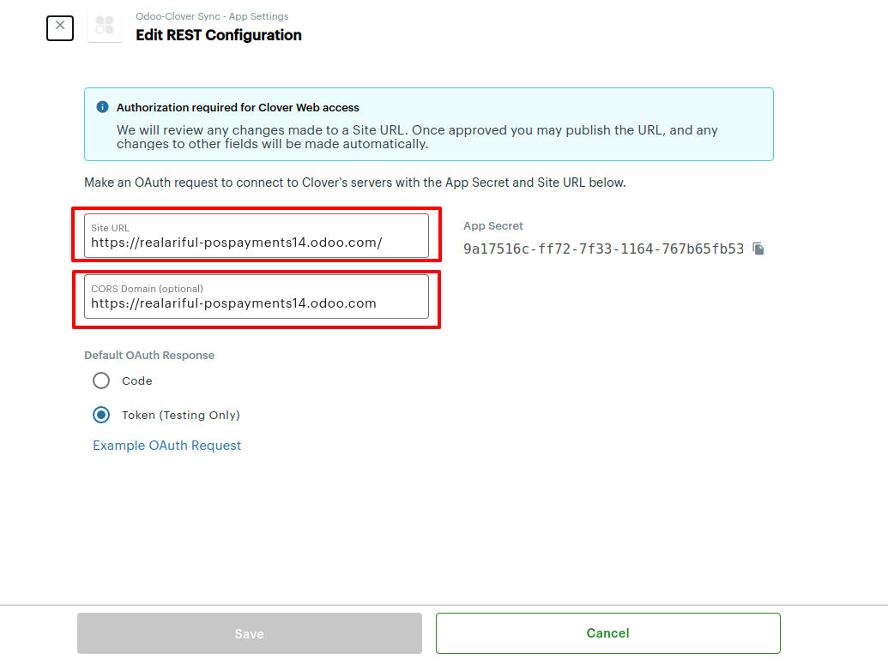

Clover is the fastest-growing point-of-sale (POS) platform backed by Fiserv, a market leader
processing over 50% of global card transactions.
With this app, adds Clover Cloud Integration as a
payment acquirer for
Odoo POS and Invoice.
Clover Cloud Integration is an Integration that allows you to easily integrate your Clover
terminal with your point of sale (POS) and Invoice application in the Odoo creating a secure and
convenient
payment environment for merchant and customers.
Features
Purchase in POS
Verifies funds on the customer’s card, removes the funds and prepares them for
deposit into
the
merchant’s account
Refund in POS
Restores all or part of the funds from a Purchase to the cardholder's card.
Cloud Pay Display
Advantages
Flexibility – Cloud connections support connecting to devices that are not
on the same network as the POS
No certificate requirements – The application connects to the device through
Clover’s servers, which eliminates the need for browsers running the POS to
install and trust the Clover device server certificate
Disadvantages
Performance – Because the cloud proxies requests through Clover’s servers,
it may not perform as well as a direct connection to the Clover device
More complex connection configuration – The connection configuration for the
cloud is more complex than the configuration for a direct connection
The steps for Clover Pay Cloud Setup
Physical setup of Clover Device
Setting up your Clover Account
Associate Clover Device
Activating your Dev Kit
Setting the CORS domain
1. Physical setup of Clover Device
Connect your Clover device to a network
After your device powers on, the Connect to Network screen helps get you connected.
Connect to the network with an Ethernet cable
Because wireless can be unreliable or spotty (which is often out of your control),
we recommend connecting your Clover devices to the internet via Ethernet.
This method ensures that your Clover device is connected and online even when
your wireless connection is not responding.
If your Ethernet cable is already plugged into the hub, your device automatically tries to
connect to the internet. If your Ethernet is not connected, follow the instructions to plug
in your Ethernet cable to your device.
To connect your device via Ethernet:
Plug one end of your Ethernet cable into the device hub.
Plug the other end into your modem, router, or switch.
Your device will automatically try to connect to the internet.
You will see Successfully Connected to Server when connected.
If your device does not automatically connect,
Tap Check Connection. If this fails, wait two minutes and tap Check Connection button again. If you
receive an Error connecting to the network message:
Check that the router used is connected to the internet by plugging in your laptop or mobile device.
Check that the Ethernet cable is plugged all the way into the Printer.
Tap Check Connection.
You will see Successfully Connected to Server when connected
Connect your Clover device to a Wi-Fi network To connect to a Wi-Fi network:
Tap Configure next to the Wi-Fi option.
From the list of available wireless networks, tap the name of your wireless network.
(If your network doesn't appear, tap Add a New Network and then tap the network by name.)
Enter the network password.
Tap Done.
Tap Check Connection.
When the connection is successful, you will be taken through the activation process.
If not, you'll be asked to select a different network or re-enter the Wi-Fi password.
It is preferred to connect the Clover Device using Ethernet Cable.
In the confirmation email you receive, follow the instructions to verify your email address. You
are redirected to the Developer Dashboard to complete your account information.
Fill in the following information about your account:
Full Name: Your identification information in the sandbox environment
Public Developer Name: Either your developer name or company name. The
developer name is displayed to users when viewing your app on the Clover App Market.
Create your Test Merchant: Your first test merchant. You can edit this
information at a later point and also create more test merchants in the Developer Dashboard.
Use the following table to complete the test merchant information.
3. Associate Clover Device
For Sandbox, please follow these steps:
After setting up your Clover sandbox account, you can associate your Clover Dev Kit with your test
merchant account:
On the Associate Dev Kit modal that appears, enter the serial number for your
development kit found on the sticker attached to your Dev Kit's box (for example, C012UQ12345678).
Select your test merchant account from the Test Merchant list.
Click Associate Dev Kit. An activation code appears. Clover also sends you an
email with a code to your development account. You will need this code to activate your Dev Kit.
4. Activating your Dev Kit
After you've associated your Dev Kit, complete the setup and activation steps for your Dev Kit.
NOTE
The Clover Flex Dev Kit includes a hub with ports for power, USB type B, and Ethernet to aid in
development and testing. This hub replaces the charging cradle that is shipped with merchant
devices.
As part of your on-screen Dev Kit setup, you are not charged for selecting a merchant service
plan.
The activation process takes a few minutes. Once the Dev Kit is activated, you see an update on
the Dev Kits page on the Developer Dashboard.
Reassociating or disassociating your Dev Kit
As part of your app development in sandbox, you can create multiple test merchants with different
configurations. To reassociate your Dev Kit with another test merchant:
On the Dev Kits page, click Reassociate Dev Kit from the
overflow menu of your associated Dev Kit.
On the Reassociate Dev Kit modal that appears, select the new test merchant
from the Test Merchant list.
Click Reassociate Dev Kit. An activation code appears. Clover also sends you an
email with a code to your development account. You will need this code to activate your Dev Kit.
On the Dev Kits page, click Disassociate Dev Kit from the
overflow menu of your associated Dev Kit.
On the Disassociate Dev Kit modal that appears, click Disassociate Dev
Kit. The Dev Kit is disassociated. You can associate your Dev Kit with another test
merchant account.
For Production:
Add Domain to Clover App
The Cloud Pay Display app must be installed and running on the Clover device before you can connect.
5. Setting the CORS domain
To establish a connection between your app and the Clover device,
you must configure the CORS domain using the developer dashboard.
Log on to the developer dashboard (sandbox or production).
On the Your Apps tab, find your app and click Settings.
On the Settings page, click Web Configuration.

In the CORS Domain field, type your app's URL.
Click Save.
7. CLover Pay Cloud Installation and Configuration
Installation
Go to Odoo Database
Go to Apps.Remove the filter and search by "Clover"
Install App "Clover Cloud Integration with Odoo POS"
Configuration
Go to Point of Sale
Go to Configuration --> payment Methods
Create a new payment method
Select "CLover Cloud"
Select "CLover Cloud"
On the Settings page, click Webhooks.
Add the URL:
"https://YOUR_SERVER/clover/webhook" eg: "https://cloverpayments.odoo.com/clover/webhook"
Click on "SEND VERIFICATION CODE"
Login to your Odoo Database. Go to Point of Sale App, Configuration --> Payment Methods.
Purchase in Odoo POS
Open a new session “New Session”.
Select Products from POS and click on Payment
Select clover clover as Payment in Odoo POS
Press "Send" Button
Status will changes from "Payment request Pending" to "Waiting for Card". At the same time, a sound
beep will be heard
in the clover Terminal.
Insert the card in the clover Terminal.
If payment is successful, the status message will change from "Waiting for Card" to "Payment
Successful".
Now click on "Validate".
You can see the receipt here. Now click on "Next Order".

 Purchase in POS
Purchase in POS


 On the Settings page, click Web Configuration.

On the Settings page, click Web Configuration.
